Approximating Areas#
Discussion & Definitions#
From our discussion of the area problem we know that our goal is to calculate the area under a general curve. We also know how we will be attacking this problem., by approximating the area with a sum of rectangle areas and then taking the limit as we use more and more rectangles. At this point we need to formalize these approximations, introduce some notation and terminology, and examine the relationships between different approximations.
Although we will discuss the terms and develop the formulas in general we will use the function \(f(x) = x^2\) as our pictorial and numeric example. In the image below we are approximating the area under the curve on the interval \([0, 1]\) using 5 rectangles.
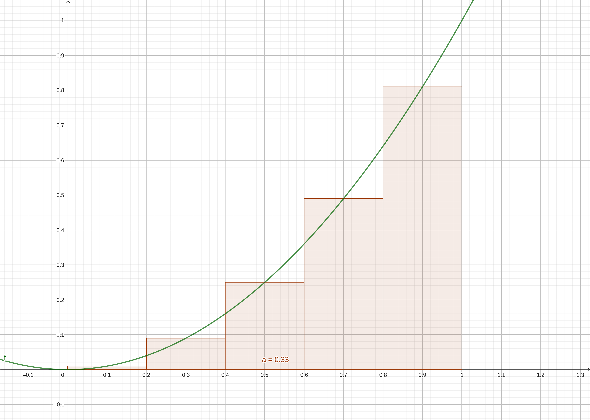
\(f(x) = x^2\) on \([0, 1]\) using 5 Rectangles#
Note that the rectangles all have the same width, \(\frac{1}{5}.\) We will follow this convention, although we do not need to, since it will simplify the calculations. So in general, if we have a function \(f(x)\) and we want to find the area under the curve and over the interval \([a,b]\) we will divide the interval up into equal length segments (which will be the bases for the rectangles). This is called a regular partition of \([a,b].\)
\(f(x) = x^2\) on \([0, 1]\) using 5 Rectangles#
In our example, we have introduced \(x_0, x_1, x_2, x_3, x_4, x_5\) with \(a = 0 = x_0\), \(b = 1 = x_5\), and each of the subintervals \([x_0, x_1], [x_1, x_2], [x_2, x_3], [x_3, x_4], [x_4, x_5]\) all have the same length of \(\frac{1}{5}.\)
Now let’s generalize this, if we create a regular partition of the interval \([a,b]\) using \(n\) divisions (so \(n\) rectangles) we would have values, \(x_0, x_1, x_2, x_3, x_4, \ldots, x_n\) with \(a = x_0\), \(b = x_n\), and each of the subintervals \([x_0, x_1], [x_1, x_2], [x_2, x_3], [x_3, x_4], \ldots, [x_{n-1}, x_n]\) all have the same length. The length of each subinterval is called \(\Delta x\) and is calculated by,
This will be the length of the base of each of our rectangles.
The next question is, what about the height of each of the rectangles? The tops of the rectangles must intersect the curve or either the rectangles will be too tall or too short. This means that the height of the rectangles must be \(f(x_i^*)\) where \(x_i^*\) is somewhere in the \(i^{th}\) interval \([x_{i-1}, x_i]\). There are three common positions for \(x_i^*\), the left endpoint, the right endpoint, and the center.
We will start with the left endpoint,
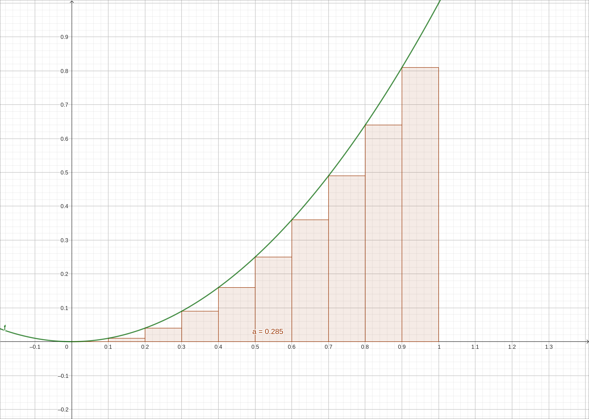
Left Endpoint Approximation#
In this case \(x_i^* = x_{i-1}\), this is called the left-endpoint approximation, the area of the rectangles is denoted \(L_n\) and is calculated as,
Definition: Left-Endpoint Approximation
If we use the right endpoint,
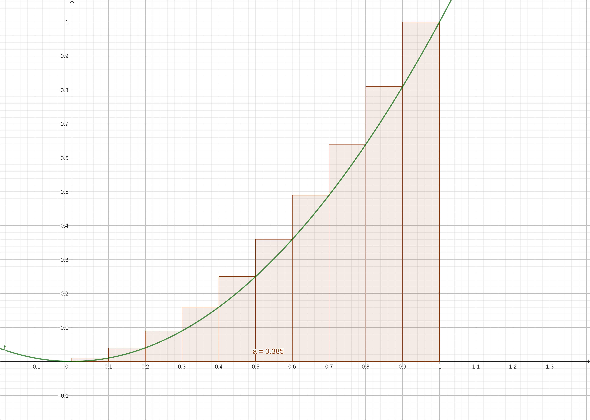
Right Endpoint Approximation#
In this case \(x_i^* = x_{i}\), this is called the right-endpoint approximation, the area of the rectangles is denoted \(R_n\) and is calculated as,
Definition: Right-Endpoint Approximation
The third common position is at the midpoint of each interval,

Midpoint Approximation#
In this case \(x_i^* = \bar{x}_i = \frac{x_{i-1} + x_{i}}{2}\), this is called the midpoint approximation, the area of the rectangles is denoted \(M_n\) and is calculated as,
Definition: Midpoint Approximation
where \(\bar{x}_i = \frac{x_{i-1} + x_{i}}{2}\).
Note
We could take the position of \(x_i^*\) anywhere in the subinterval, the approximations will be different but when we take the limit as the number of rectangles increases to infinity the results will be the same. In fact, we could take \(x_i^*\) at random in the interval.
There are two other sums we are interested in but they are not as easy to calculate, and do not have a nice compact formula as the ones above. Note in our example of \(f(x) = x^2\) with the left endpoint approximation. All of the rectangles are completely below the curve. So the approximation we get here will be an under estimate. Likewise with the right endpoint approximation all of the rectangles contain the curve so the approximation we get here will be an over estimate. Now this happens in our example since \(f(x) = x^2\) is an increasing function on \([0, 1]\). In general, the left and right approximations will not be under and over estimates. For example, looking at \(x^3-3 x^2+x+6\) on \([-1, 3]\) we see that the left and right approximations are not over and under estimates since some rectangles are above the curve and some are below the curve.
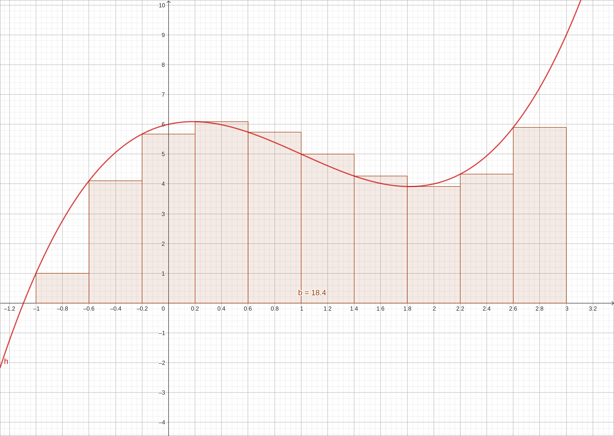
Left Endpoint Approximation#
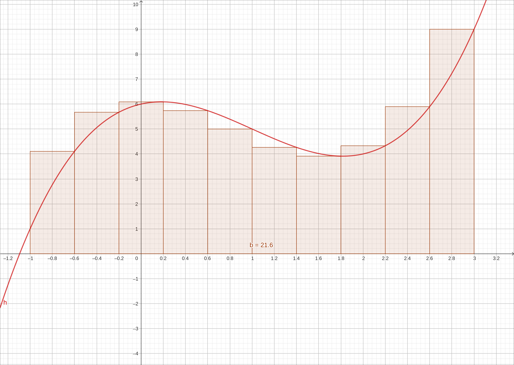
Right Endpoint Approximation#
We can, however, define two more approximations, the upper sum and the lower sum. The upper sum (\(US_n\)) is the approximation that uses the maximum of the function in each subinterval for the height of the rectangle.
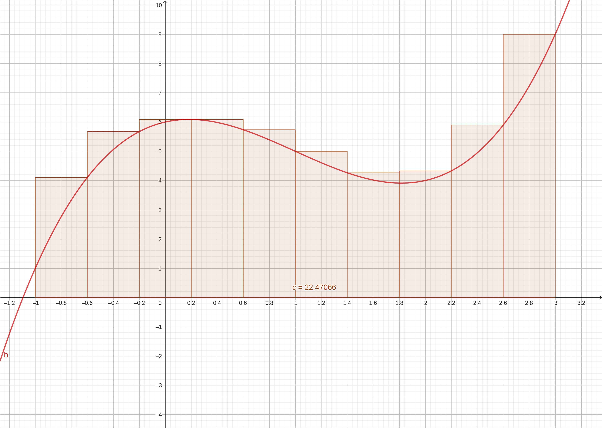
Upper Sum Approximation#
The lower sum (\(LS_n\)) is the approximation that uses the minimum of the function in each subinterval for the height of the rectangle.
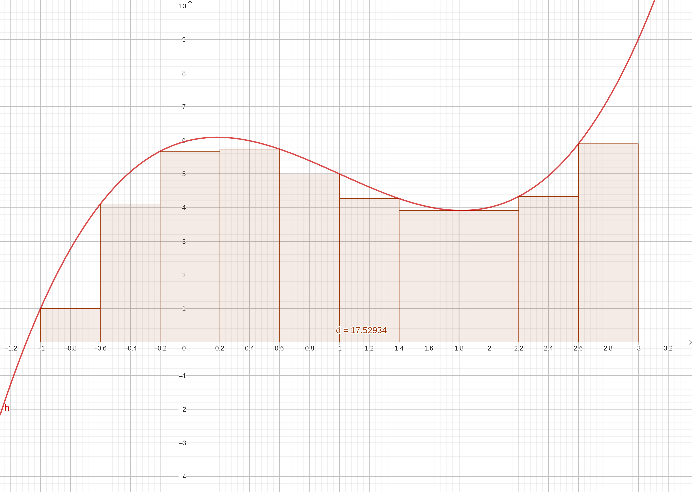
Lower Sum Approximation#
These are not as easy to calculate since for some subintervals you might use the left endpoint, some the right endpoint, and some might use a point somewhere in between. Basically, you need to fine the absolute maximum and absolute minimum of the function in each subinterval, which can be a significant amount of work.
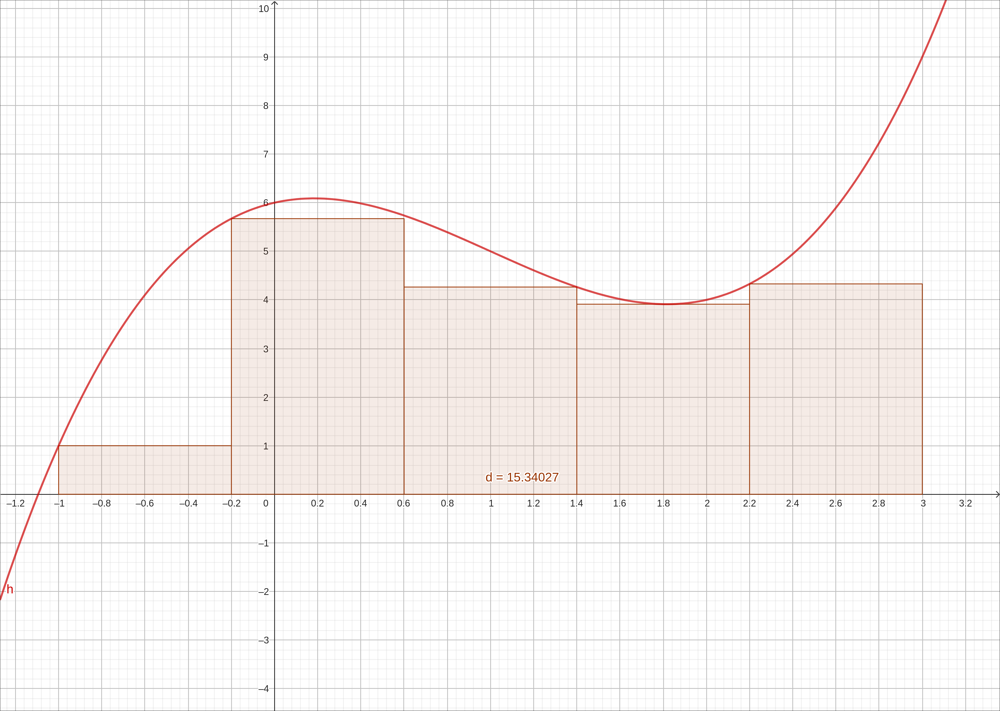
Lower Sum Approximation#
Nonetheless, if you can calculate the upper and lower sums you are guaranteed that, \(LS_n \leq A \leq US_n\).
These approximations are special cases of a more general concept of the Riemann sum.
Definition: Riemann Sum
Let \(f(x)\) be defined on a closed interval \([a, b]\) and let \(P\) be a regular partition of \([a, b].\) Let \(\Delta x\) be the width of each subinterval \([x_{i − 1}, x_i]\) and for each \(i\), let \(x_i^*\) be any point in \([x_{i − 1}, x_i]\). A Riemann sum is defined for \(f(x)\) as
As we know from our area problem discussion, to define the area we let the number of rectangles increase without bound. Formally,
Definition: Area Under a Curve
Let \(f(x)\) be a continuous, nonnegative function on an interval \([a, b]\), and let \(\sum_{i = 1}^n f(x^*_{i}) \Delta x\) be a Riemann sum for \(f(x).\) Then, the area under the curve \(y = f(x)\) on \([a, b]\) is given by
Example: \(f(x) = x^2\) on \([0, 1]\)#
In this example we will analyze the approximations for the example we used for a visualizations of the concepts above, \(f(x) = x^2\) on \([0, 1].\)
GeoGebra#
Input the function,
x^2
We will calculate and get a visualization for the left approximation, input the command,
RectangleSum(f,0,1,10,0)
The RectangleSum command takes in 5 arguments, the first is the function, then the lower bound for the interval, then the upper bound for the interval, the number of rectangles to use, and finally the position in the interval for the x values. Here we are using 0 which designates the left endpoint. The right endpoint would use a 1 here and the midpoint would use a 0.5 here. You could also use 0.25 to take the x values 1/4 of the way from the left to right endpoints if you wanted. The image you will get is below and notice that the approximation to the area is 0.285.
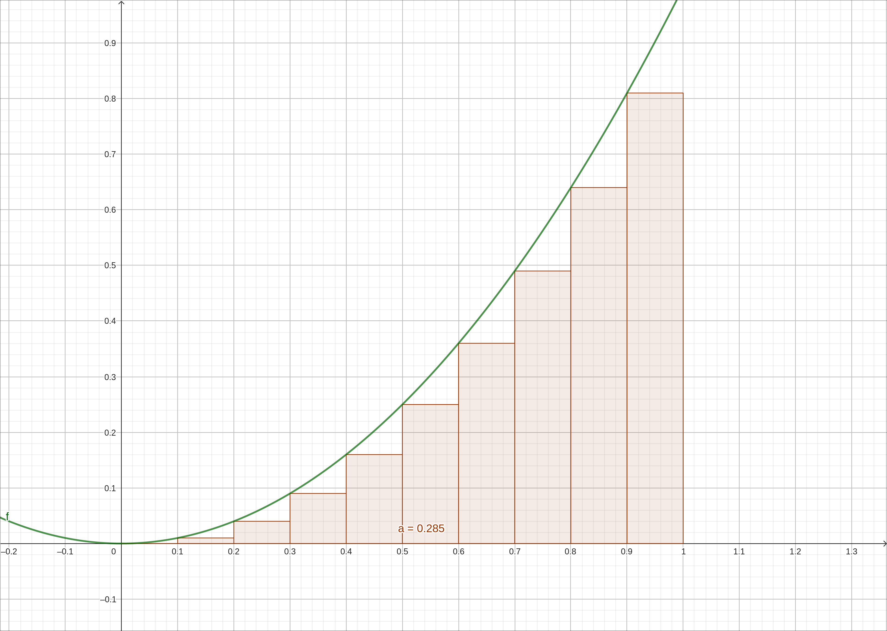
Rectangle Sum Approximation#
Now increase the number of rectangles to 50, the approximation is now 0.3234 and the image is,
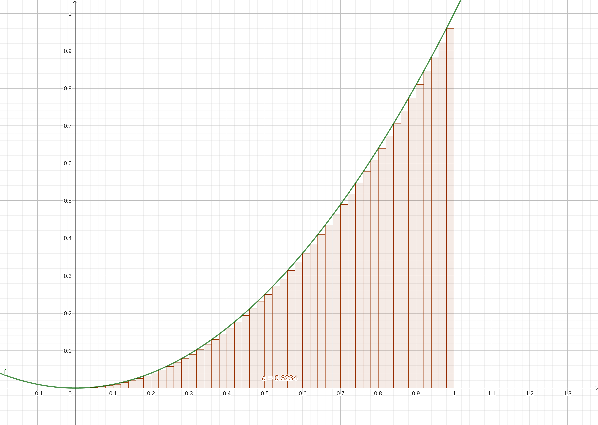
Rectangle Sum Approximation#
Now increase the number of rectangles to 500, the approximation is now 0.33233 and the image is,
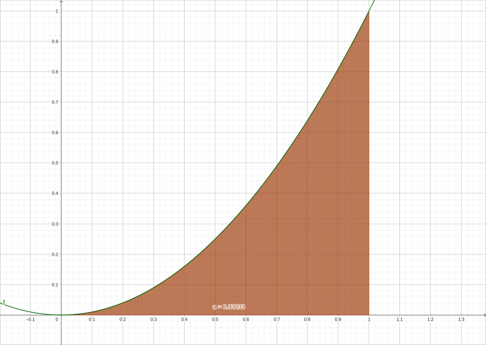
Rectangle Sum Approximation#
From our discussion above we know that these are all upper sums. Let’s move over to the right endpoint. Change the number of rectangles back to 10 and change the last entry from 0 to 1. The image should change to the one below and the approximation is 0.385.
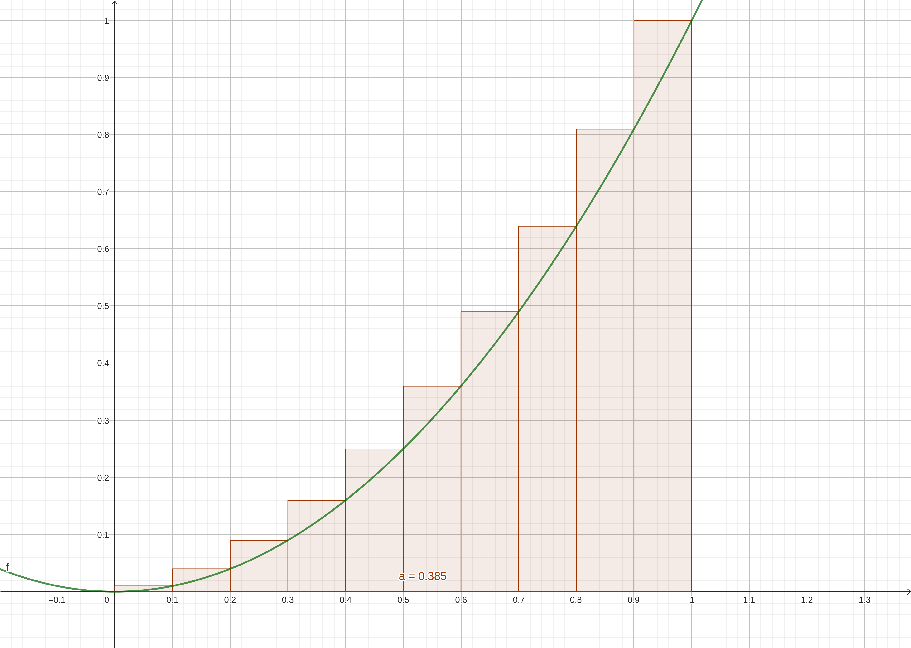
Rectangle Sum Approximation#
Now increase the number of rectangles to 50, the approximation is now 0.3434 and the image is,
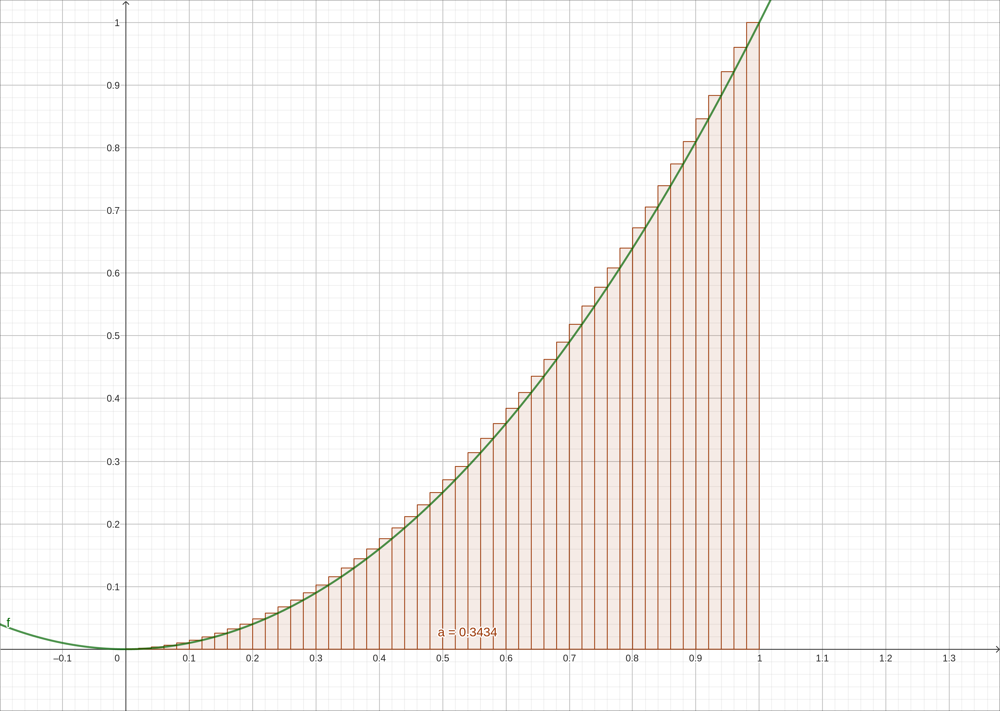
Rectangle Sum Approximation#
Now increase the number of rectangles to 500, the approximation is now 0.33433 and the image is,
Rectangle Sum Approximation#
It appears that the approximations are getting closer to 0.33333… We also know that \(0.33233 \leq A \leq 0.33433\).
CLAE#
CLAE does not have the nice rectangle visualization but it does have an option for calculating Riemann sums with a very large number of rectangles.
Input the function,
x^2
You can graph this if you would like but we will stick with the computations. Select the function, then select Calculus > Integral Approximation Techniques > Riemann Sum. In the dialog box that appears put in 0 for the lower bound, 1 for the upper bound, change the test point position to 0 (for the left endpoint), and keep the number of rectangles at 10. The result is, 0.285. Now repeat this with 50 rectangles and keep the other settings as above, we get 0.3234. Now do 500 rectangles, for 0.3323339999999999. Let’s go a bit further, do the same approximations with 1000, 1,000,000, and 10,000,000 rectangles, we will get 0.33283350000000034, 0.3333328333334962, and 0.33333328333333545.
The test point position of 0 designates the left endpoint. The right endpoint would use a 1 here and the midpoint would use a 0.5 here. You could also use 0.25 to take the x values 1/4 of the way from the left to right endpoints if you wanted.
Do the above calculations with the right endpoint (test point position set to 1), the results are as follows.
It appears that the approximations are getting closer to 0.33333…
Do the above calculations with the midpoint (test point position set to 0.5), the results are as follows.
It appears that the approximations here are getting closer to 0.33333… as well.
Maxima#
Maxima does not have a built-in function for Riemann sums but it does have a sum command that we can use to get the job done. We will start with the left endpoint using 10 rectangles.
Input the function,
f(x):=x^2
define \(\Delta x\),
dx:(1-0)/10
Now we can calculate the sum,
s:sum(f((i-1)*dx)*dx,i,1,10)
The result is \(\frac{57}{200}\), and finally we can get an approximation to the value with,
float(s), numer
with a result of 0.285. Now we can change the number of rectangles by changing the value of dx and altering the sum command to match. We could also change the interval in a similar manner. This is doable but can be a little cumbersome. While we do not want to digress into programming in Maxima we can create a Maxima function to simplify the process. The following will define a left Riemann sum function. Copy and paste it into Maxima and hit Shift+Enter to load it into the workspace.
left_sum(RSfct,lb,ub,n):=block([dx,s,a],local(RSfct,lb,ub,n,dx,s,a),
dx:(ub-lb)/n,
s:sum(RSfct(lb+(i-1)*dx)*dx,i,1,n),
a:float(s), numer,
a)$
Now to take the left sum approximation with 10 rectangles we would run
left_sum(f,0,1,10)
The result will be 0.285. Now change the 10 to 50 and rerun for 0.3234. Then 500, 1000, and 1,000,000 for 0.332334, 0.3328335, 0.3333328333335. Note that we just use the function name and not f(x). A right approximation function is very similar. Copy the code below, paste into Maxima and hit Shift+Enter.
right_sum(RSfct,lb,ub,n):=block([dx,s,a],local(RSfct,lb,ub,n,dx,s,a),
dx:(ub-lb)/n,
s:sum(RSfct(lb+i*dx)*dx,i,1,n),
a:float(s), numer,
a)$
Now to take the right sum approximation with 10 rectangles we would run
right_sum(f,0,1,10)
The result will be 0.385. Now change the 10 to 50 and rerun for 0.3434. Then 500, 1000, and 1,000,000 for 0.334334, 0.3338335, 0.3333338333335.
It appears that the approximations are getting closer to 0.33333…
A midpoint sum is similar and given below.
mid_sum(RSfct,lb,ub,n):=block([dx,s,xp,a],local(RSfct,lb,ub,n,dx,s,xp,a),
dx:(ub-lb)/n,
xp:lb+i*dx - dx/2,
s:sum(RSfct(xp)*dx,i,1,n),
a:float(s), numer,
a)$
It can be run with the same syntax,
right_sum(f,0,1,10)
The result will be 0.3325. Now change the 10 to 50 and rerun for 0.3333. Then 500, 1000, and 1,000,000 for 0.333333, 0.33333325, 0.33333333333325. These too appear to be getting closer to 0.33333…
Note
With the three functions we created left_sum, right_sum, and mid_sum we use RSfct as the input function. With the way these functions are written and the way Maxima handles variables you do not want to define your function that you are taking the sums of to be named RSfct, it is unlikely that you would but should be mentioned nonetheless.
Example: \(f(x) = e^{\sin(x)}\) on \([1, 3]\)#
In this example we will analyze the approximations for \(f(x) = e^{\sin(x)}\) on \([1, 3].\) A graph of the function and the area we are interested in is below.
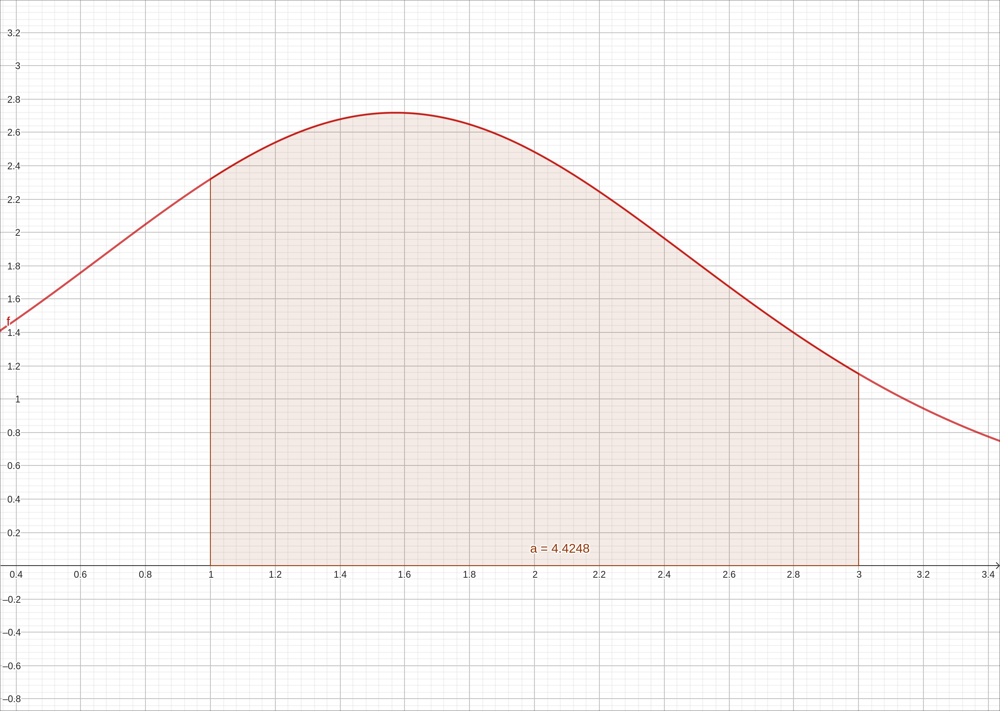
\(f(x) = e^{\sin(x)}\) on \([1, 3]\)#
GeoGebra#
Follow the rectangle sum procedure in the first example to approximate the area under the curve using the midpoint. With 20 rectangles we get 4.4258.
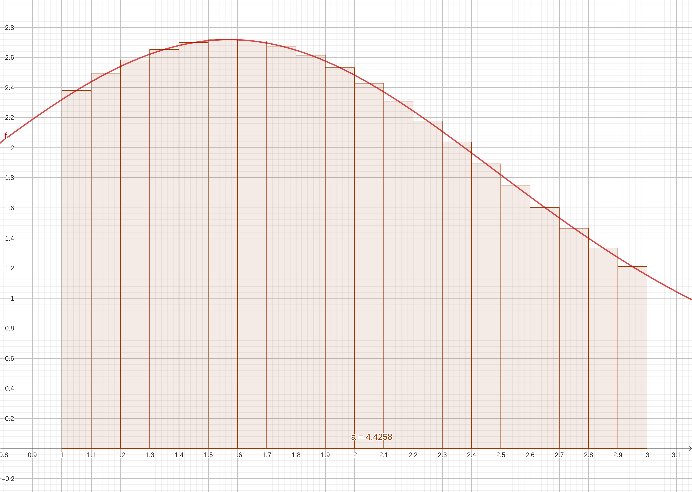
\(f(x) = e^{\sin(x)}\) on \([1, 3]\) with 20 Rectangles#
If we increase this to 100 rectangles we get 4.42484. With 1000 rectangles we get 4.4248.
CLAE#
Follow the rectangle sum procedure in the first example to approximate the area under the curve using the midpoint. You can input the function as either,
exp(sin(x))
or
E^sin(x)
With 20 rectangles we get 4.42579773949299. If we increase this to 100 rectangles we get 4.424839818343443. With 1000 rectangles we get 4.424800326038407 and with 1,000,000 rectangles we get 4.424799927135514.
Maxima#
Follow the rectangle sum procedure in the first example using our midpoint sum function to approximate the area under the curve using the midpoint.
Input the function,
f(x):=exp(sin(x))
then input the following to use 20 rectangles,
mid_sum(f, 1, 3, 20)
With 20 rectangles we get 4.42579773949299. If we increase this to 100 rectangles we get 4.424839818343443. With 1000 rectangles we get 4.424800326038407 and with 10,000 rectangles we get 4.424799931124128.
Example: Finding the exact value of the area.#
At the end of this section we defined the area under the curve as the limit of a Riemann sum.
Definition: Let \(f(x)\) be a continuous, nonnegative function on an interval \([a, b]\), and let \(\sum_{i = 1}^n f(x^*_{i}) \Delta x\) be a Riemann sum for \(f(x).\) Then, the area under the curve \(y = f(x)\) on \([a, b]\) is given by
In subsequent sections we will see that there are alternative ways to make this calculation that are in general much easier. Doing these calculations by hand is restricted to the simplest of functions, usually polynomials of degree 3 or less. Even with the power of a computer algebra system this calculation is difficult.
CLAE: \(f(x) = x^2\) on \([0, 1]\)#
We will take the example we were using above and follow it through to an exact value, from our approximations we would assume the exact value is \(\frac{1}{3}\). We will use the right endpoint formula for the Riemann sum, any can be used so we simply chose one. Our function is \(f(x) = x^2\), the interval \([a, b] = [0, 1]\), \(\Delta x = \frac{b-a}{n} = \frac{1}{n}\), and \(x_i = a + i \Delta x = \frac{i}{n}.\) So our area is
There are a number of ways we can do this in CLAE, here is one of them,
Input the function,
x^2
Now evaluate this at \(\frac{i}{n}\) with Algebra > Evaluate, variable is x, expression is i/n. The result will be
If we assume that this is in R2 we can input R2*1/n into the CAS and get the expression for \(f(x^*_{i}) \Delta x\), which is
Now we take the sum, Calculus > Sum > Sum, variable i, beginning index 1, ending index n. The result is,
which simplifies to
Now take the limit of this expression as \(n \to \infty\) with Calculus > Limit, variable n, limit point oo, and the result is, as expected, \(\frac{1}{3}.\)
CLAE: \(f(x) = e^{\sin(x)}\) on \([1, 3]\)#
We will follow the same procedure with \(f(x) = e^{\sin(x)}\) on \([1, 3].\)
Again we will use the right endpoint formula for the Riemann sum. Our function is \(f(x) = e^{\sin(x)}\), the interval \([a, b] = [1, 3]\), \(\Delta x = \frac{b-a}{n} = \frac{2}{n}\), and \(x_i = a + i \Delta x = 1 + \frac{2i}{n}.\) So our area is
Input the function,
exp(sin(x))
Now evaluate this at \(1 + \frac{2i}{n}\) with Algebra > Evaluate, variable is x, expression is 1 + 2*i/n. The result will be
If we assume that this is in R2 we can input R2*2/n into the CAS and get the expression for \(f(x^*_{i}) \Delta x\), which is
Now we take the sum, Calculus > Sum > Sum, variable i, beginning index 1, ending index n. The result is,
This is a bad sign that it cannot simplify the sum and usually means that going further will not result in anything of interest. If we do push forward and take the limit of this expression as \(n \to \infty\) with Calculus > Limit, variable n, limit point oo, and the result is an error message, which simply means that the CAS could not do the calculation.